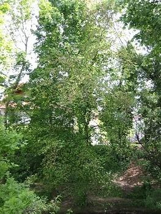

|
| Ulmen sind in Europa zu Hause.
 | Durch das sogenannte Ulmensterben sind vor allem viele Bergulmen und Feldulmen in Europa gestorben.
Schuld daran ist ein Pilz, der die Wasserleitbahnen im Baumstamm verstopft. Er wird von Ulmensplintkäfern von Baum zu Baum übertragen.
Ulmensplintkäfer fressen nicht gerne an Flatterulmen. Daher sind sie weniger vom Ulmensterben betroffen.
|